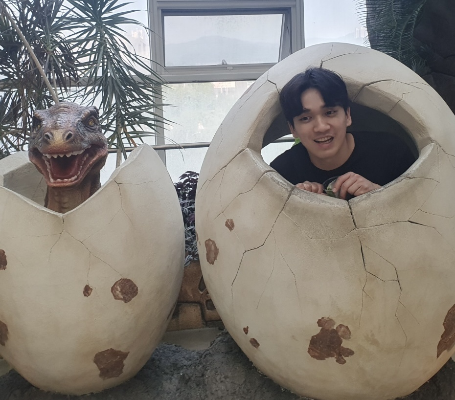

Hello! I am a Ph.D student at KAIST AI, advised by Jaegul Choo.
I am interested in reinforcement learning and robotics. My current research is focused on utilizing pre-trained foundational models for visuo-motor control.
Email / Google Scholar / LinkedIn / Github
